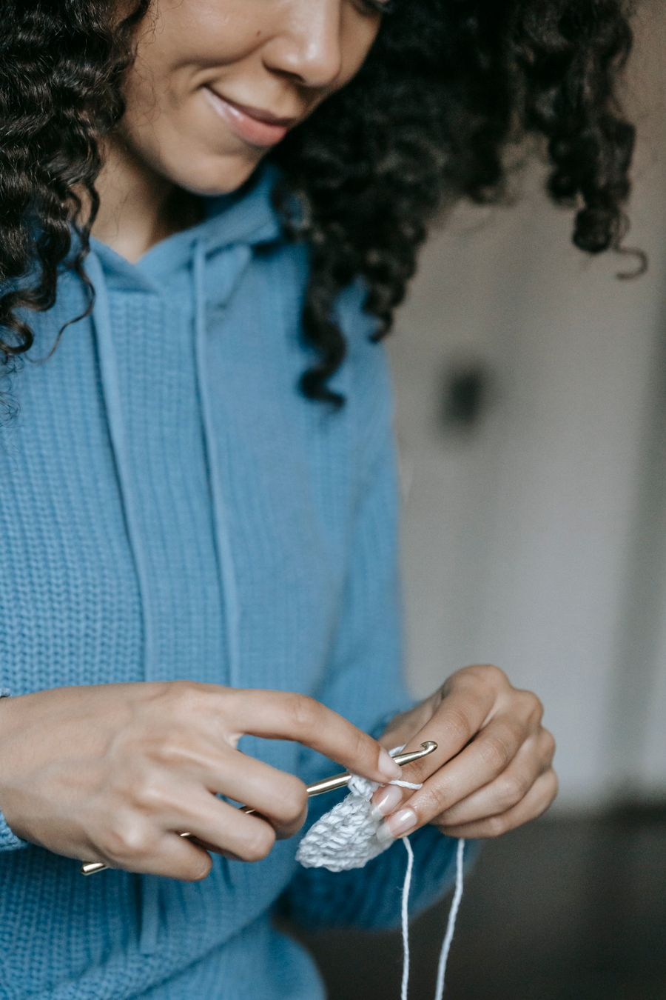

A little thread, a lot of heart
Handcrafted with Love, Inspired by Africa.
Meet Nancy’s Crochets: considered, characterful crochet made by hand. Find the piece that feels a little more like you.
Crochet that lets your individuality shine.
Find your kind of handmade
A stitch for every mood.
The little things, made with love
A few favourites for you.

A softer kind of statement
Made by hand.
Made to be you.
Nancy’s Crochets is a small handmade crochet brand inspired by the colour, pattern and creative spirit found across African design. Each piece is shaped stitch by stitch, with room for the little details that make it feel personal.
Not mass-made, not exactly alike — just thoughtful crochet for people who like their style to have a story.
Get to know usA little more about us
Every stitch has intention.
At Nancy’s Crochets, handmade is the point. Crochet is a way to make something with care, texture and character — pieces that celebrate individuality and draw inspiration from the colours and rhythms of African design.
We’re keeping this space honest and growing: the pieces shown are sample listings, and details like current availability, colours and pricing are confirmed through an enquiry.
The Nancy’s Crochets edit
Find your favourite.
Sample listings for inspiration. Ask us to confirm prices, colours and availability.
No pieces match that search. Try another name or category.
Your next favourite starts here
Something special
in mind?
Ask a question about a piece, colour or size. We’d love to hear what you’re looking for.
Let’s start a conversation
Say hello.
Have a question about a sample piece, colours or sizing? Send an enquiry below. Your message won’t be sent or saved by this demo until a contact service is connected.
When we’re here
- Monday–Friday
- 09:00–17:00 SAST
- Saturday
- Closed
- Sunday
- Closed
Weekend enquiries are welcome, but will be answered on the next working day.